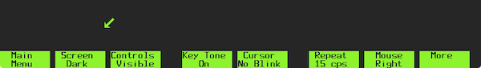

The DMD 5620 terminal has a battery-backed memory area used to store terminal settings. To configure the terminal settings, use the SETUP key (this is mapped to F9 on the Macintosh keyboard).
Pressing SETUP (F9) will bring up the terminal's built-in setup program. A new menu will appear along the bottom of the terminal display area.
The menu items may be selected either with the mouse by clicking the left mouse button, or with a corresponding function key. From left to right, these items correspond to F1 through F8.
After making any changes, press the F9 key on the keyboard again (or click the right mouse button) to store the settings. These settings will be remembered between runs of the emulator.
The Port Options menu allows you to change settings for the emulated serial port. Clicking on Port A Options or pressing the F2 key will reveal the following menu.
The Parity, Bits/Char, Type, and Rcv Flow menus have no effect on a Telnet connection and can safely be ignored. The Speed menu, however, is faithfully emulated and characters will be sent and received at the selected rate.
Repeatedly clicking on the Speed button or pressing the F2 key will cycle through the available speeds. You can select from:
(Note: At the moment, only Port A, the main port used to communicate with a remote host, is emulated. Changing settings for Port B will have no effect.)
Clicking on Main Menu or pressing the F1 key will return you to the main settings menu.
The Host Options menu controls various features of communication between the terminal and the host. These settings are described below.
Full, the default, means that the terminal will not echo transmitted characters back to the screen. This is normally the required setting for a UNIX host. Half means that transmitted characters will be echoed back to the screen.
The default is Full.
This option selects whether the terminal will encode non-printable ASCII characters when sent to the host. It's safe to leave this on the default setting, Off.
This option selects whether the terminal will generate ASCII DC1/DC3 characters to the host. It's safe to leave this on the default setting, On.
This option selects whether DC1/DC3 characters typed at the keyboard will be passed to the host. It's safe to leave this on the default setting, No.
There are two pages of Preferences settings.
Clicking on More will display the second page of settings.
This option selects between light characters on a dark background, or dark characters on a light background. The default is Dark.
This option determins whether ASCII control characters are printed to the terminal using symbols (Visible), ignored entirely, (Invisible), or displayed as spaces (Spaces). The default is Visible.
This option controls whether key click sounds are generated on every key press. The default is On.
(Note: This feature is not emulated.)
This option controls whether the cursor blinks. If set to Blink, the cursor will blink once every second. The default is No Blink.
This option selects the key repeat speed.
(Note: This feature is not emulated. The terminal will always use the macOS key repeat speed instead.)
This option selects which hand the mouse is held in.
If set to Right, the mouse buttons are numbered 1, 2, and 3 from left to right. If set to Left, the mouse buttons are numbered 3, 2, and 1 from left to right. The default is Right.
This option selects the action caused by a received new line (ASCII 0x0a). Selecting NL causes an advance to the beginning of hte next line. Selecting Index causes an advance to the same position on the next line. The default is Index.
This option selects the sequence sent by the Return key on the keyboard. Selecting CR sends a carriage return (ASCII 0x0d). Selecting CR/LF sends a carriage return followed by a line feed (ASCII 0x0a). Selecting LF sends a line feed only. The default is CR
This menu allows you to create custom macros that can be performed by the keys F1 through F8. To create a macro, click on any of the menu items, or press the corresponding function key.